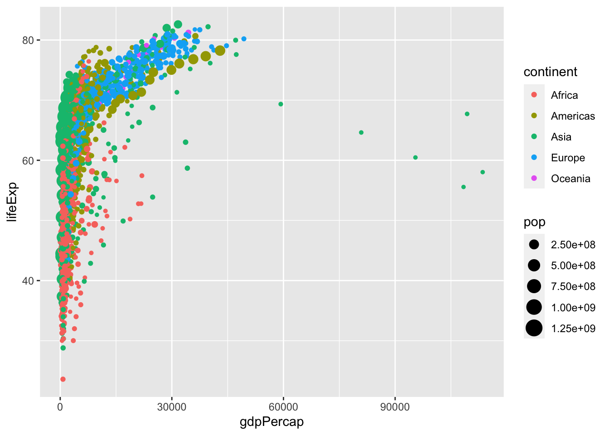
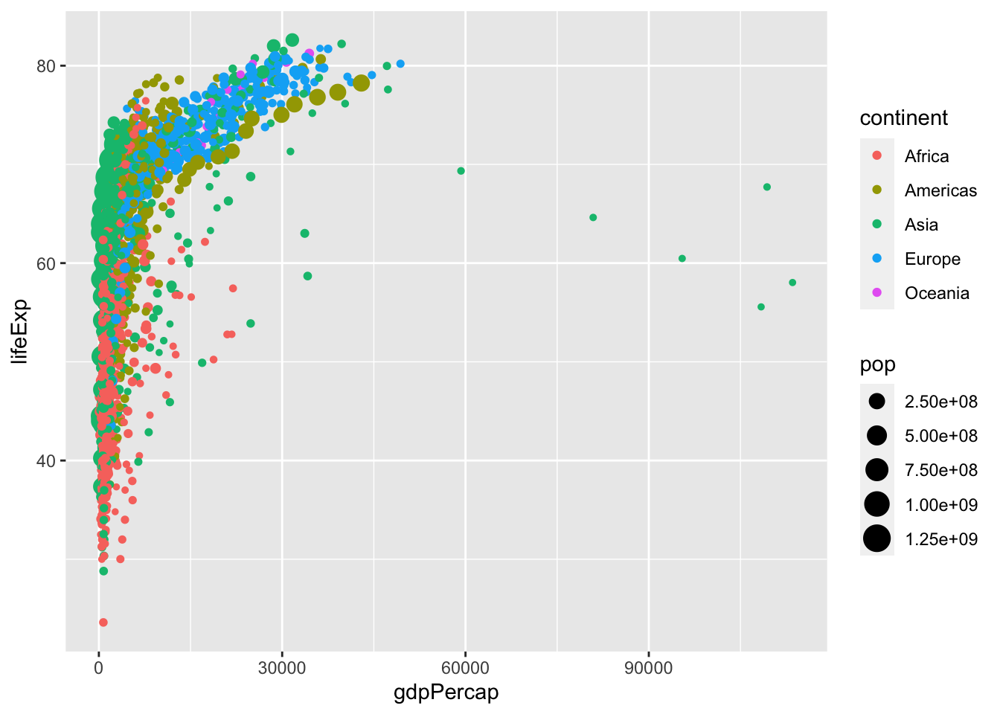
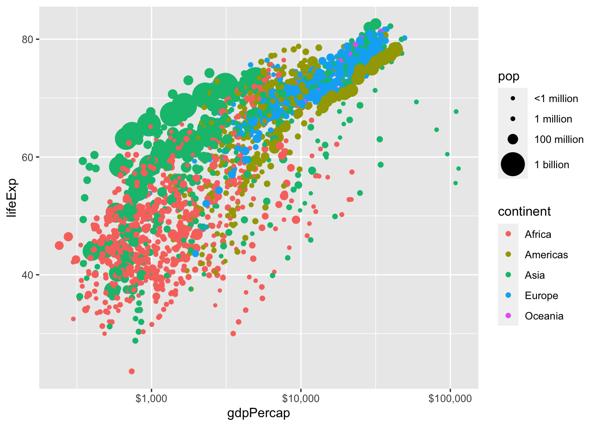
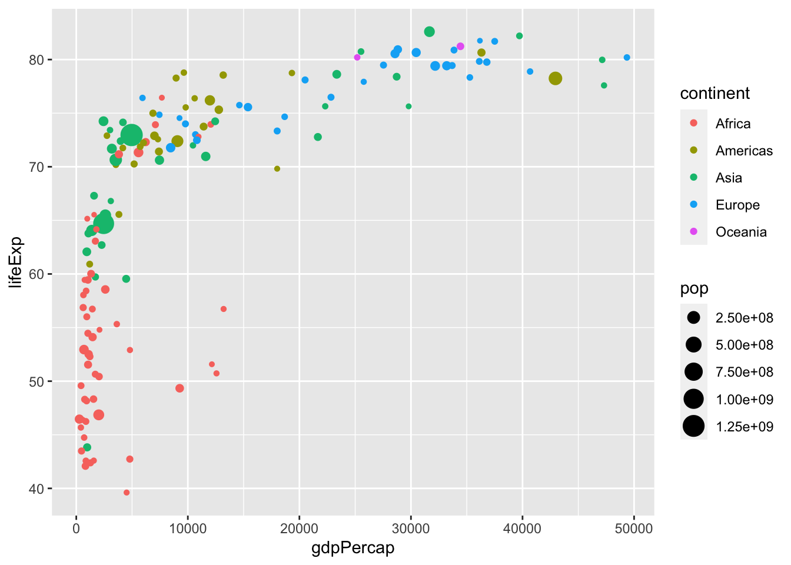
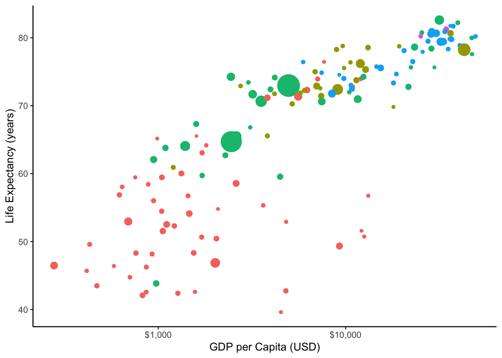
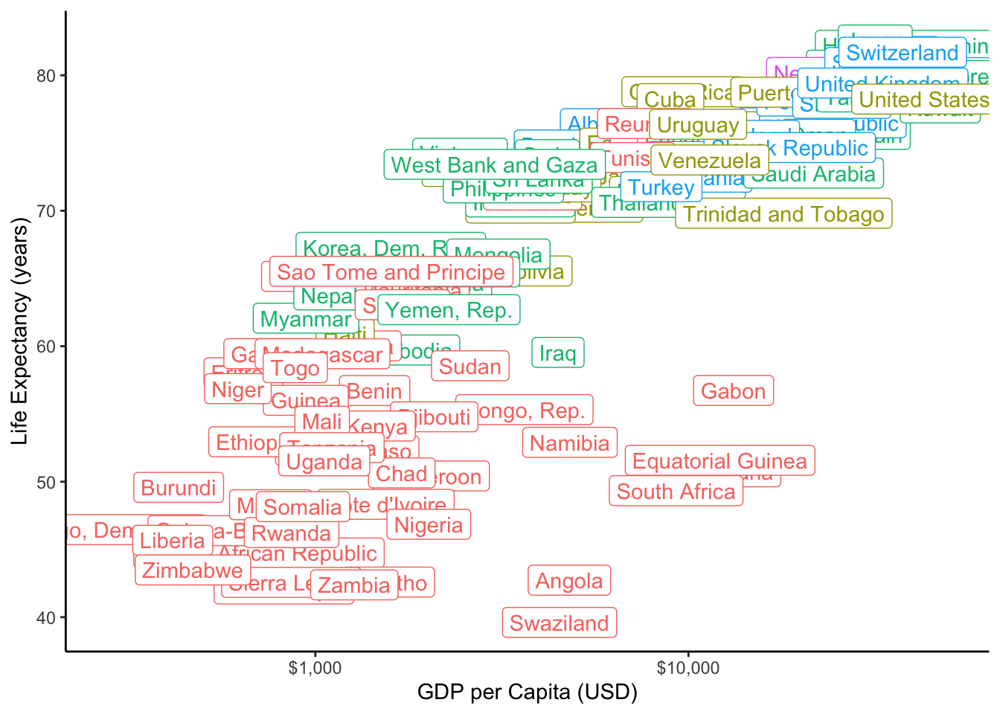
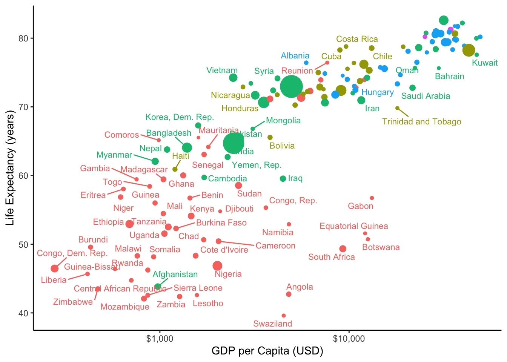
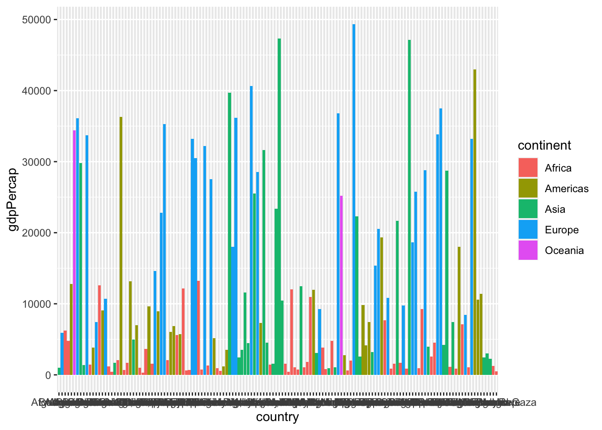
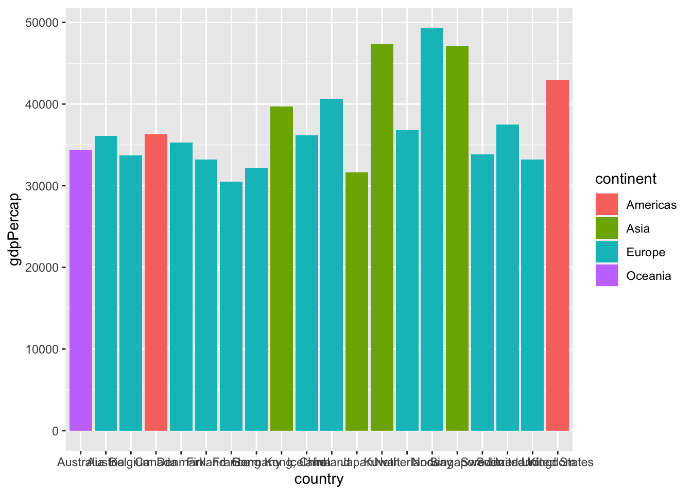
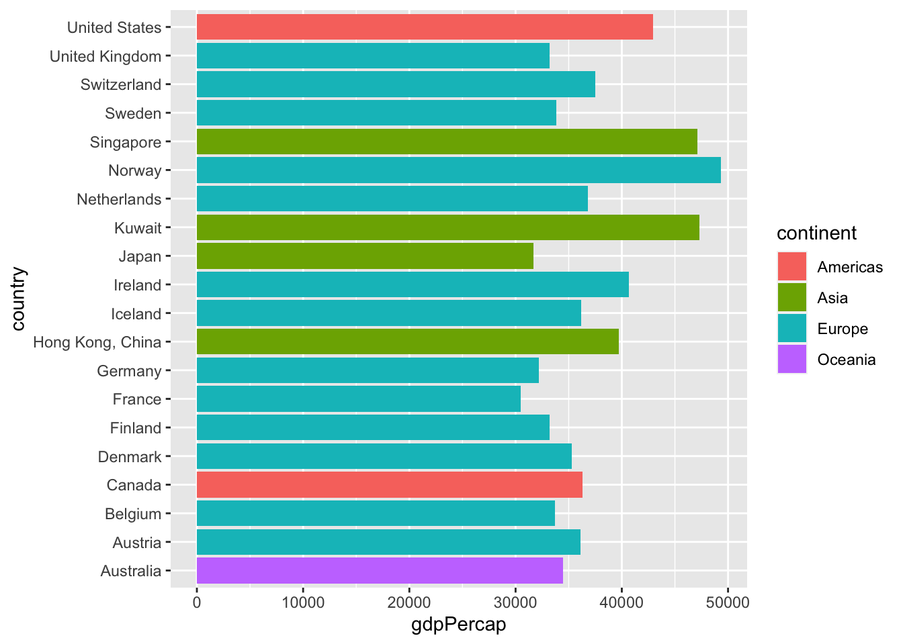

library(gapminder)
library(ggplot2)
p<-ggplot(gapminder) +
aes(x = gdpPercap,
y = lifeExp) +
geom_point(aes(size = pop,
color = continent))
p
ggplot2, being one of the most popular packages, has a lot of user-made extensions that allow you to do lots of neat things with your plots, from plotting networks, Parliaments, dendrograms, and other types of graphs, to formatting and visual tools that help improve your figures.
For the following demonstrations, we will use the gapminder data. Let’s start just by making a basic graph and saving it as an object called p. I have decided to map (aes()) each geom_point’s color to continent and size to pop:
library(gapminder)
library(ggplot2)
p<-ggplot(gapminder) +
aes(x = gdpPercap,
y = lifeExp) +
geom_point(aes(size = pop,
color = continent))
p
I don’t like the default choices ggplot2 has made for my point sizes for population, or the way it depicts them (in scientific notation) on the legend.
I will set my own scale by setting the breaks1 manually, according to a vector I define as: c(100000, 1000000, 100000000, 1000000000). So, I will use one point size for populations of 100 thousand, a bigger one for a million, a bigger one for 100 millions, and the biggest for 1 billion.
I am going to label these (on my legend) as the following vector: c("<1 million","1 million","100 million", "1 billion").
Lastly, I don’t think the size of the billion circle is big enough, a billion is a lot of people! So I will set the range of sizes from size 1 point to size 10 point.
To do this, I include all of this inside the scale_size command (because I am scaling the size of points):
# let's save this as p2
p2<-p+scale_size(breaks = c(100000, 1000000, 100000000, 1000000000), # cut offs
labels=c("<1 million","1 million","100 million", "1 billion"), # labels on legend
range=c(1,10)) # min & max point size
# let's see what we did
p2
This is also very hard to see the relationship (because it is nonlinear!). So I will rescale the x_axis logarithmically with base 10:
p2+scale_x_log10()Doing this already gives me a much clearer view of the relationship! But I don’t like the labels, or the breaks it has chosen, so I can customize them again:
p2+scale_x_log10(
breaks = c(10^3, 10^4, 10^5), # 1,000, 10,000, and 100,000
labels = scales::dollar)
The scales package has a nice command to format labels, in this case I am calling the scales::dollar function to print dollar signs in front of my axes numbers. I could have done it manually instead by setting labels = c("$1,000", "$10,000", "$100,000").
We learn more about this in class 1.4 using tidyverse, but let’s only look at one year of data (there’s too much going on in this plot, especially with the large points, some points are covering other points). So let’s only look at the year 2007. I can do this in two ways:
gap2007), plot with that object as my data:library(tidyverse)gap2007 <- gapminder %>%
filter(year == 2007)
p2007 <- ggplot(data = gap2007)+
aes(x = gdpPercap,
y = lifeExp) +
geom_point(aes(size = pop,
color = continent))
p2007
ggplot2’s data argument:library(tidyverse)
p2007 <- gapminder %>%
filter(year == 2007) %>%
ggplot(data = .)+ # . is placeholder
aes(x = gdpPercap,
y = lifeExp) +
geom_point(aes(size = pop,
color = continent))
p2007
Now let’s clean up the graph with the same things I did before, hide the legends (set the color and size, my two aesthetic mappings, guides equal to FALSE), add some labels, and change the theme:
p3<-p2007+scale_size(breaks = c(100000, 1000000, 100000000, 1000000000),
labels=c("<1 million","1 million","100 million", "1 billion"),
range=c(1,10))+
scale_x_log10(
breaks = c(10^3, 10^4, 10^5),
labels = scales::dollar)+
labs(x = "GDP per Capita (USD)",
y = "Life Expectancy (years)")+
guides(color = FALSE,
size = FALSE)+
theme_classic()Warning: `guides(<scale> = FALSE)` is deprecated. Please use `guides(<scale> =
"none")` instead.p3
If I were to try to label some countries, with either geom_text (just word) or geom_label() (text in a box), setting the label aesthetic to country, see what would happen:
p3+geom_label(aes(label = country,
color = continent))
The labels, which are plotted right on top of each point, cover the points!
Someone figured out a clever way to let us do both, and it is a package called ggrepel, which allows you to plot labels that are “repelled” away from the point they are labelling in an intelligent way. This is a separate package, which you must first install and then load with library to use it!
# install.packages("ggrepel") # do this only once
library(ggrepel)
p3+geom_text_repel(aes(label = country,
color = continent,
size = pop),
size = 3)Warning: ggrepel: 69 unlabeled data points (too many overlaps). Consider
increasing max.overlaps
This is much better, but for this particular chart, since a lot of observations are close together, it would be unwise to label everything, perhaps only label a subset of important points.
One alternative is instead of points, to use some other marking. Someone created the ggflags package to let you plot flags of countries. This creates a new type of geom, called geom_flag, that requires you to map the country aesthetic to a variable in your data with the country name (incidentally, in gapminder that variable is also called country). Let’s try that out instead (and add my same customizations as above)
We can also make our plot a bit more interactive (on web only of course!) using the ggplotly package, which allows ggplot2 to interface with a javascript library called plotly.2
# install.packages("plotly") # do this only once
library(plotly)ggplotly(p3)Another major type of plot that we may use often is a barplot. Suppose we want to show the GDP per Capita of the top 20 countries in 2007. If I were to plot country on the x axis and gdpPercap on the y axis with geom_col,3 I get the following mess:
ggplot(gap2007)+
aes(x = country,
y = gdpPercap,
fill = continent)+
geom_col()
So let’s filter4 arrange our data in descending order by gdpPercap:
gap2007 %>%
arrange(desc(gdpPercap))# A tibble: 142 × 6
country continent year lifeExp pop gdpPercap
<fct> <fct> <int> <dbl> <int> <dbl>
1 Norway Europe 2007 80.2 4627926 49357.
2 Kuwait Asia 2007 77.6 2505559 47307.
3 Singapore Asia 2007 80.0 4553009 47143.
4 United States Americas 2007 78.2 301139947 42952.
5 Ireland Europe 2007 78.9 4109086 40676.
6 Hong Kong, China Asia 2007 82.2 6980412 39725.
7 Switzerland Europe 2007 81.7 7554661 37506.
8 Netherlands Europe 2007 79.8 16570613 36798.
9 Canada Americas 2007 80.7 33390141 36319.
10 Iceland Europe 2007 81.8 301931 36181.
# … with 132 more rowsWe only want the top 20 observations, so lets slice to extract just rows 1:20. Then we’ll pipe it into our plot:
bar<-gap2007 %>%
arrange(desc(gdpPercap)) %>%
slice(1:20) %>%
ggplot(data = .)+
aes(x = country,
y = gdpPercap,
fill = continent)+
geom_col()
bar
Now that’s closer to what we wanted! But here are a few more tips and tricks to make it better. First, let’s flip the axes to be able to read the countries better, using coord_flip()
bar+coord_flip()
One other useful thing to know would be how to display the bars in numerical order (from largest gdpPercap to smalleset gdpPercap) so we can get a clear ranking of countries. To do this, we are going to make use of another tidyverse package called forcats (dealing with factors), specifically the function fct_reorder(), which reorders a factor variable (our country) by the values of some other variable (our gdpPercap). We need to do this to our x variable aesthetic:
bar2<-gap2007 %>%
arrange(desc(gdpPercap)) %>%
slice(1:20) %>%
ggplot(data = .)+
aes(x = forcats::fct_reorder(country, gdpPercap), #<<
y = gdpPercap,
fill = continent)+
geom_col()+
coord_flip()
bar2
This is already looking good. Here’s another creative way to depict the same thing in a more visually-striking way. Instead of using geom_bar(), let’s combine geom_flag (to serve as end points) and geom_segment()5 (line segments) to make the following version:
The cut offs for using one size circle vs. the next/previous size circle, depending on population.↩︎
I am plotting our graph from above, not the flags, since ggflags has not been configured for plotly yet.↩︎
Using geom_col() allows you to specify an x and a y variable. geom_bar() only plots the counts of each value on the x axis. If we had done +aes(x = country)+geom_bar(), it would plot the number of observations of each country in the data, not what we want!↩︎
Note because we are defining an x aesthetic again for this, we need to make sure x is also the reordered list of countries, so note I am doing the whole fct_reorder() again.↩︎